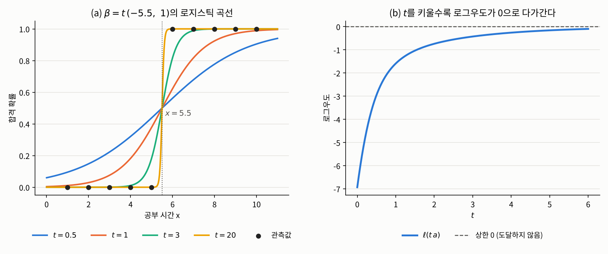

4.3 분리: 최대우도 추정값이 없을 때
4장 로지스틱 회귀 · 너무 깔끔한 데이터의 함정
들어가며
4.2절에서 계획행렬이 최대 계수이면 로지스틱 회귀의 로그우도가 순오목이라서, 최대우도 추정값이 많아야 하나라는 것을 보였습니다. 그리고 그 정리가 추정값의 존재까지 보장하지는 않는다고 했습니다.
사실 이 현상은 1.2절에서 이미 가장 단순한 모습으로 만났습니다. 동전을 20번 던져 앞면이 한 번도 나오지 않으면, 앞면이 나올 확률 \(p \in (0, 1)\)의 우도는 \(p\)가 \(0\)에 다가갈수록 계속 커지기만 하고 모수공간 안에서 최댓값에 도달하지 않았습니다. 로지스틱 회귀에서는 이 일이 더 다양한 모습으로, 그리고 생각보다 자주 일어납니다. 이번 글에서는 언제 최대우도 추정값이 존재하지 않는지 정확히 밝히고, 그때 계산 결과가 어떻게 보이는지, 그리고 어떻게 알아챌 수 있는지 살펴봅니다.
문제 1: 완벽하게 갈리는 데이터
문제 상황
학생 10명의 공부 시간이 \(1, 2, \ldots, 10\)시간이고, 6시간 이상 공부한 학생은 모두 합격하고 5시간 이하로 공부한 학생은 모두 떨어졌다고 하겠습니다. 공부 시간 하나로 합격 여부가 완벽하게 설명되는, 어찌 보면 가장 이상적인 데이터입니다. 여기에 로지스틱 회귀 \(\mathrm{logit}(\pi_i) = \beta_0 + \beta_1x_i\)를 적합하기 위해 4.2절의 뉴턴-랩슨 방법을 30번 돌려 보겠습니다.
import numpy as np
x = np.arange(1, 11, dtype=float) # 공부 시간 1, 2, ..., 10
y = (x >= 6).astype(float) # 6시간 이상 공부한 학생만 모두 합격
X = np.column_stack([np.ones(10), x])
beta = np.zeros(2)
for j in range(31):
eta = X @ beta
pi = 1 / (1 + np.exp(-eta))
loglik = np.sum(y * eta - np.log1p(np.exp(eta)))
J = X.T @ (X * (pi * (1 - pi))[:, None])
if j % 5 == 0:
se = np.sqrt(np.diag(np.linalg.inv(J)))
print(f"j = {j:2d}: beta = ({beta[0]:8.3f}, {beta[1]:7.3f}), -beta0/beta1 = "
f"{-beta[0] / beta[1] if beta[1] else float('nan'):.3f}, 로그우도 = {loglik:.2e}, se(beta1) = {se[1]:.1e}")
beta = beta + np.linalg.solve(J, X.T @ (y - pi))j = 0: beta = ( 0.000, 0.000), -beta0/beta1 = nan, 로그우도 = -6.93e+00, se(beta1) = 2.2e-01
j = 5: beta = ( -22.043, 4.008), -beta0/beta1 = 5.500, 로그우도 = -2.58e-01, se(beta1) = 4.0e+00
j = 10: beta = ( -77.547, 14.099), -beta0/beta1 = 5.500, 로그우도 = -1.73e-03, se(beta1) = 4.8e+01
j = 15: beta = (-132.562, 24.102), -beta0/beta1 = 5.500, 로그우도 = -1.17e-05, se(beta1) = 5.9e+02
j = 20: beta = (-187.562, 34.102), -beta0/beta1 = 5.500, 로그우도 = -7.87e-08, se(beta1) = 7.1e+03
j = 25: beta = (-242.562, 44.102), -beta0/beta1 = 5.500, 로그우도 = -5.30e-10, se(beta1) = 8.7e+04
j = 30: beta = (-297.562, 54.102), -beta0/beta1 = 5.500, 로그우도 = -3.57e-12, se(beta1) = 1.1e+064.2절에서는 다섯 번 만에 멈췄던 반복이 이번에는 멈추지 않습니다. 기울기 \(\beta_1\)은 다섯 번마다 약 \(10\)씩 계속 커지고, 로그우도는 \(0\)에 점점 다가가며, 표준오차는 폭발합니다. 그런데 \(-\beta_0/\beta_1\), 곧 합격 확률이 \(1/2\)이 되는 공부 시간은 \(5.5\)에 딱 고정되어 있습니다.
접근 아이디어
무슨 일이 일어나는지는 그림으로 보면 분명합니다. 합격 확률이 \(1/2\)인 지점을 \(x = 5.5\)에 고정한 채 곡선을 점점 가파르게 만들면, 5시간 이하인 학생의 적합 확률은 \(0\)에, 6시간 이상인 학생의 적합 확률은 \(1\)에 점점 다가갑니다. 그러면 모든 관측값을 점점 더 잘 맞히게 되므로 우도는 계속 커집니다. 하지만 곡선이 진짜 계단 함수가 되는 것은 기울기가 무한대일 때뿐이므로, 유한한 \(\beta\)로는 끝내 꼭대기에 도달하지 못합니다.

이 아이디어를 일반화하려면 두 가지가 필요합니다. “데이터가 완벽하게 갈린다”는 것을 정확히 정의해야 하고, 그때 정말로 최댓값이 없다는 것을 보여야 합니다.
필요한 개념들
이번 글에서는 이진 로지스틱 회귀(\(m_i = 1\))만 다룹니다. 계획행렬의 \(i\)번째 행을 \(\tilde{x}_i^\top = (1, x_{i,1}, \ldots, x_{i,d-1})\)로 쓰고, 부호 \(s_i := 2y_i - 1\)을 정의하겠습니다. 합격이면 \(s_i = 1\), 불합격이면 \(s_i = -1\)입니다.
\(\tilde{x}_i^\top a = 0\)은 설명변수의 공간에서 하나의 초평면입니다. 완전 분리는 이 초평면이 \(y_i = 1\)인 관측값과 \(y_i = 0\)인 관측값을 완벽하게 양쪽으로 가르는 것이고, 준완전 분리는 몇몇 관측값이 초평면 위에 걸쳐 있는 것을 허락하는 것입니다. 앞의 예에서는 \(a = (-5.5, 1)\)로 두면 \(\tilde{x}_i^\top a = x_i - 5.5\)의 부호가 \(x_i \ge 6\)인지에 따라 정해지므로 완전 분리입니다.
증명의 핵심은 분리 방향 \(a\)로 \(\beta\)를 밀면 어떤 관측값의 적합도 나빠지지 않고 적어도 하나는 좋아진다는 것입니다. 그러니 어디서 멈추든 그 방향으로 한 걸음 더 가면 우도가 커집니다.
1.2절의 동전 예도 이 정리의 특수한 경우입니다. 설명변수 없이 절편만 있는 모형(\(d = 1\), \(\tilde{x}_i = 1\))에서 모든 \(y_i = 0\)이면 \(s_i = -1\)이고, \(a = -1\)로 두면 모든 \(i\)에서 \(s_i\tilde{x}_i^\top a = 1 > 0\)입니다. 절편만 있는 모형에서는 “모든 관측값이 한쪽에 몰려 있다”는 것이 곧 완전 분리입니다.
그렇다면 분리가 없으면 최대우도 추정값이 반드시 존재할까요? 그렇습니다. 이 방향의 증명은 이 과목의 범위를 넘으므로 결과만 소개합니다.
해결
이제 앞의 반복 결과를 해석할 수 있습니다.
- 분리 방향은 정해지지만 크기는 정해지지 않습니다. 반복이 진행되면서 \(\beta\)는 분리 방향 \(a = (-5.5, 1)\)에 평행하게 무한히 멀어집니다. \(-\beta_0/\beta_1 = 5.5\)로 고정된 것이 그 증거입니다. 데이터는 “경계가 \(5.5\)시간 근처”라는 것은 분명히 알려 주지만, 경계 근처에서 확률이 얼마나 가파르게 바뀌는지에 대해서는 아무 정보도 주지 않습니다. 4시간과 6시간 사이에 학생이 없으니 당연합니다.
- 로그우도는 \(0\)으로, 표준오차는 무한대로 갑니다. 정리 4.3.2대로 로그우도는 상한 \(0\)에 다가가기만 하고, 정보 행렬 \(X^\top WX\)는 가중치 \(\pi_i(1 - \pi_i)\)가 모두 \(0\)으로 가면서 사라집니다. 그래서 표준오차가 폭발합니다.
- “수렴했다”는 메시지를 믿으면 안 됩니다. 실제 소프트웨어는 보통 로그우도의 변화가 아주 작아지면 멈춥니다. 이 예에서는 \(j = 10\)에서 이미 로그우도가 \(-0.0017\)로 상한 \(0\)과 거의 같아서, 이 근처에서는 한 번의 반복으로 바뀌는 양도 아주 작습니다. 허용 오차를 적당히 잡은 소프트웨어라면 “\(\hat{\beta}_1 = 14.1\), 표준오차 \(48\)”이라는 결과를 내놓고 수렴했다고 보고할 것입니다. 하지만 이 숫자는 최대우도 추정값이 아니라, 반복을 언제 멈췄는지에 따라 달라지는 임의의 값입니다.
문제 2: 한 범주에서 모두 실패할 때
문제 상황
완전 분리는 설명변수 하나가 반응변수를 완벽하게 설명하는, 비교적 드문 상황처럼 보일 수 있습니다. 그런데 준완전 분리는 범주형 설명변수가 있으면 아주 쉽게 생깁니다. 세 분반에서 20명씩 모두 60명의 공부 시간과 합격 여부를 조사했는데, 3반은 시험이 유난히 어려워서 합격자가 한 명도 없었다고 하겠습니다. 3장의 더미 코딩으로 1반을 기준 범주로 두고 \(\mathrm{logit}(\pi_i) = \beta_0 + \beta_1x_{i,1} + \beta_2D_{i,2} + \beta_3D_{i,3}\)을 적합해 보겠습니다. 여기서 \(x_{i,1}\)은 공부 시간, \(D_{i,2}, D_{i,3}\)은 2반과 3반의 지시변수입니다.
np.random.seed(1557)
group = np.repeat([0, 1, 2], 20) # 0: 1반, 1: 2반, 2: 3반 (각 20명)
hours = np.random.uniform(0, 10, size=60)
y = np.random.binomial(1, 1 / (1 + np.exp(-(-4 + 0.8 * hours))))
y[group == 2] = 0 # 3반은 아무도 합격하지 못함
print("반별 합격자 수:", [int(y[group == g].sum()) for g in range(3)])
X = np.column_stack([np.ones(60), hours, group == 1, group == 2]).astype(float) # 더미 코딩, 기준은 1반
beta = np.zeros(4)
for j in range(41):
eta = X @ beta
pi = 1 / (1 + np.exp(-eta))
if j % 10 == 0:
print(f"j = {j:2d}: beta = {np.round(beta, 3)}, 3반의 최대 적합 확률 = {pi[group == 2].max():.1e}")
beta = beta + np.linalg.solve(X.T @ (X * (pi * (1 - pi))[:, None]), X.T @ (y - pi))반별 합격자 수: [9, 8, 0]
j = 0: beta = [0. 0. 0. 0.], 3반의 최대 적합 확률 = 5.0e-01
j = 10: beta = [ -3.268 0.587 0.111 -11.815], 3반의 최대 적합 확률 = 7.7e-05
j = 20: beta = [ -3.268 0.587 0.111 -21.815], 3반의 최대 적합 확률 = 3.5e-09
j = 30: beta = [ -3.268 0.587 0.111 -31.815], 3반의 최대 적합 확률 = 1.6e-13
j = 40: beta = [ -3.268 0.587 0.111 -41.815], 3반의 최대 적합 확률 = 7.2e-18접근 아이디어
3반의 계수 \(\beta_3\)만 반복마다 정확히 \(1\)씩 줄어들며 \(-\infty\)로 달아나고, 나머지 세 계수는 \((-3.268, 0.587, 0.111)\)에 일찌감치 자리를 잡았습니다. \(\beta_3\)를 줄이면 3반 학생들의 적합 확률만 \(0\)에 가까워지고 1반과 2반 학생들의 적합 확률은 그대로이므로, 3반 학생이 모두 불합격인 이상 우도는 계속 좋아지기만 합니다.
필요한 개념들
이것이 준완전 분리입니다. \(a = (0, 0, 0, -1)\)로 두면 \(\tilde{x}_i^\top a = -D_{i,3}\)이므로, 3반 학생(\(s_i = -1\), \(D_{i,3} = 1\))은 \(s_i\tilde{x}_i^\top a = 1 > 0\)이고, 1반과 2반 학생은 \(s_i\tilde{x}_i^\top a = 0\)입니다. 모든 \(i\)에서 \(0\) 이상이므로 정의 4.3.1의 준완전 분리이고, 정리 4.3.2에 의해 최대우도 추정값이 존재하지 않습니다. 1반과 2반 학생들은 초평면 위에 걸쳐 있어서 이 방향으로 아무리 가도 영향을 받지 않고, 그래서 나머지 계수들은 1반과 2반만으로 정해지는 값에 수렴한 것입니다.
해결
이 예에서 배울 점은 다음과 같습니다.
- 분리는 생각보다 흔합니다. 표본이 작거나, 범주가 많거나, 사건이 드물면 어떤 범주에서 성공이나 실패가 하나도 없는 일이 쉽게 생깁니다. 범주형 설명변수를 넣기 전에 범주별로 성공과 실패의 개수를 세어 보는 것이 가장 간단한 점검입니다.
- 증상으로 알아챌 수 있습니다. 어떤 계수와 그 표준오차가 비정상적으로 크거나, 반복 횟수를 늘릴수록 계수가 계속 커지거나, 적합 확률이 \(10^{-10}\)처럼 사실상 \(0\)이나 \(1\)인 관측값이 무리를 지어 있으면 분리를 의심해야 합니다. 4.2절에서 본 것처럼 겹치는 데이터에서는 뉴턴-랩슨 방법이 몇 번 만에 멈추므로, 반복이 이상하게 오래 걸리는 것 자체가 신호입니다.
- 분리는 데이터가 틀렸다는 뜻이 아닙니다. 3반의 합격 확률이 아주 낮다는 것은 데이터가 분명히 말해 주는 사실입니다. 다만 “얼마나 낮은가”를 정할 정보가 이 표본에는 없을 뿐입니다. 대처 방법으로는 범주를 합치거나, 문제가 되는 변수를 빼거나, 계수의 크기에 벌점을 주는 \(L^1\), \(L^2\) 벌점 추정을 쓰는 방법이 있습니다. 벌점 추정은 언제나 유한한 값을 돌려주지만, 그것은 벌점을 더한 목적함수의 최적점이지 이 글에서 다룬 최대우도 추정값이 아니라는 점에 주의해야 합니다.
정리
로지스틱 회귀에서 최대우도 추정값에 대해 알게 된 것을 모으면 다음과 같습니다.
| 상황 | 최대우도 추정값 | 뉴턴-랩슨 방법의 모습 |
|---|---|---|
| \(\mathrm{rank}(X) < d\) | 식별 불가능 (3장과 같음) | \(X^\top WX\)가 가역이 아님 |
| \(\mathrm{rank}(X) = d\), 데이터가 겹침 | 존재하고 유일 (정리 4.2.2, 4.3.3) | 몇 번 만에 이차 수렴 |
| \(\mathrm{rank}(X) = d\), 완전 분리 | 존재하지 않음 (정리 4.3.2) | 모든 계수가 분리 방향으로 발산 |
| \(\mathrm{rank}(X) = d\), 준완전 분리 | 존재하지 않음 (정리 4.3.2) | 일부 계수만 발산 |
따라서 수치 계산이 마지막으로 내놓은 유한한 값을 그대로 최대우도 추정값이라고 믿을 것이 아니라, 수렴했는지와 분리가 없는지를 반드시 따로 확인해야 합니다. 4.2절의 예처럼 점수가 사실상 \(0\)이 되는 유한한 점에 도달했다면, 정리 4.2.2에 의해 그 점이 유일한 최대우도 추정값이고 따라서 분리도 없다고 결론 내릴 수 있습니다.
지금까지는 모형을 정하고 계수를 구하는 데 집중했습니다. 하지만 로지스틱 회귀를 실제로 쓰는 많은 경우의 목적은 계수 그 자체보다 예측, 특히 새로운 관측값이 \(0\)인지 \(1\)인지 가려내는 분류입니다. 확률을 내놓는 모형으로 어떻게 분류를 하고, 그 성능을 어떻게 평가할까요? 4.4절에서 이 질문을 다룹니다.
연결되는 개념
- \(\leftarrow\) 이전 개념: 4.2 최대우도 추정과 IRLS
- \(\rightarrow\) 다음 개념: 4.4 확률에서 분류로
Footnotes
A. Albert, J. A. Anderson, “On the existence of maximum likelihood estimates in logistic regression models”, Biometrika 71(1), 1984, 1–10.↩︎